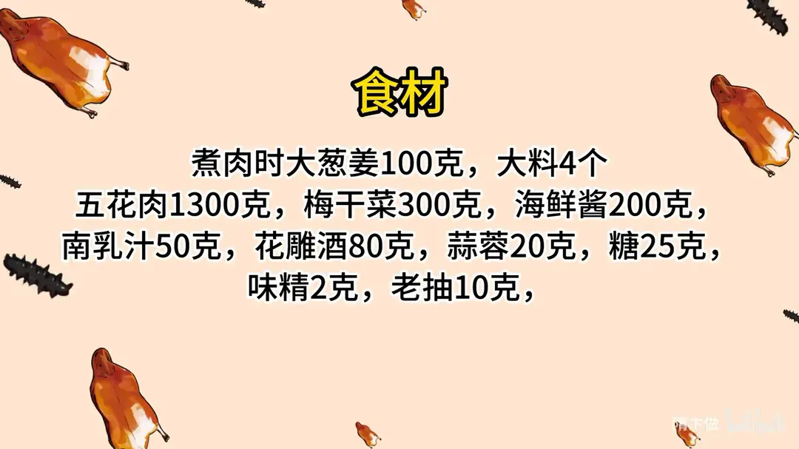
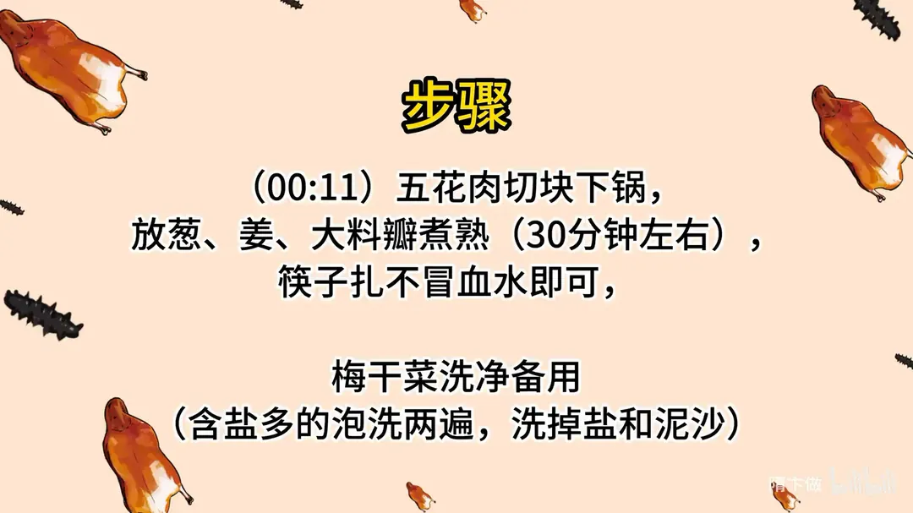
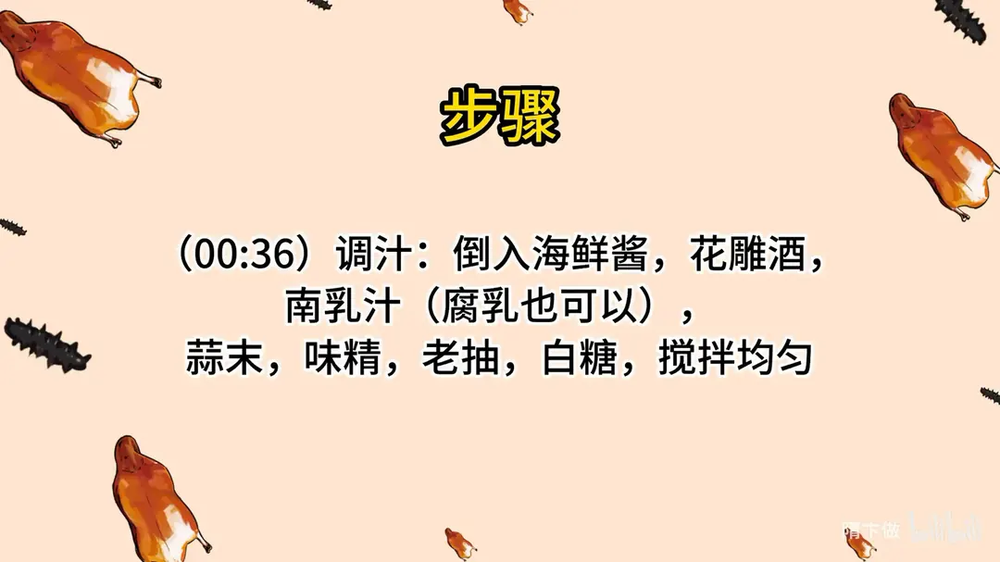
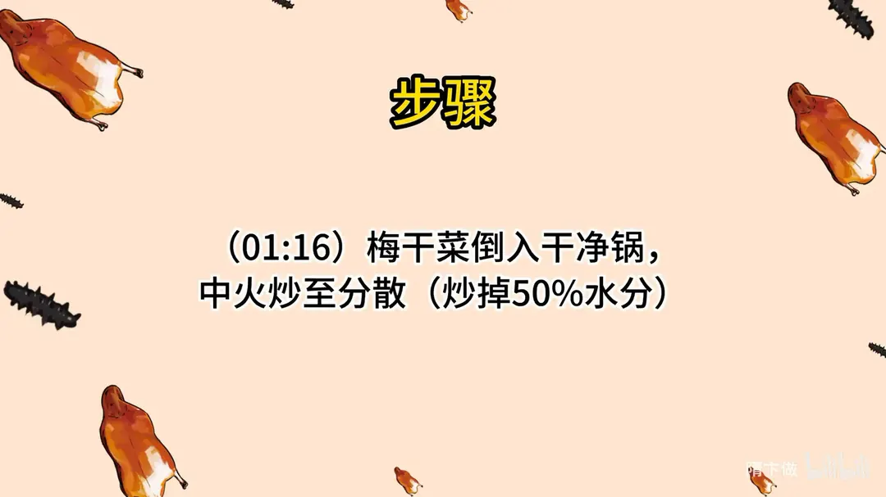
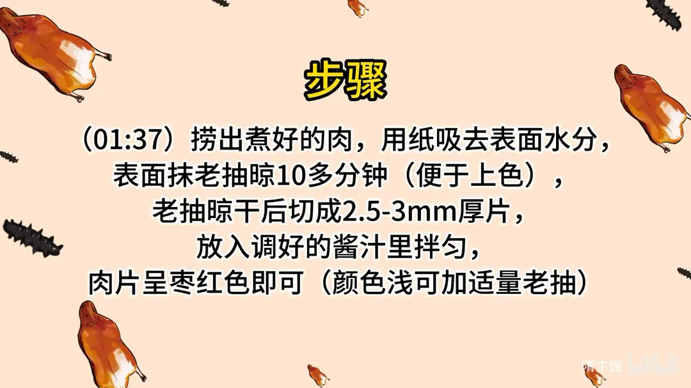
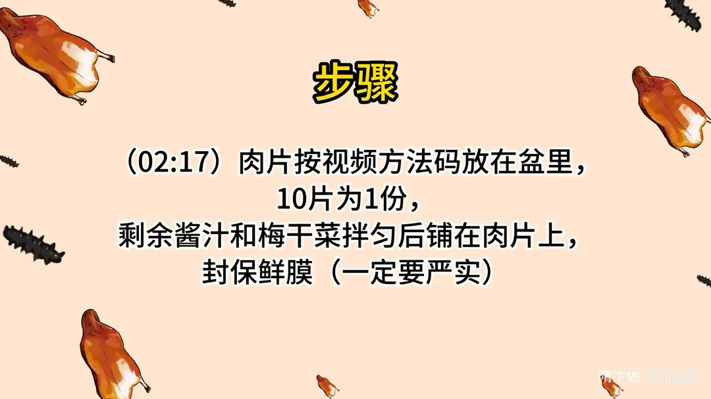
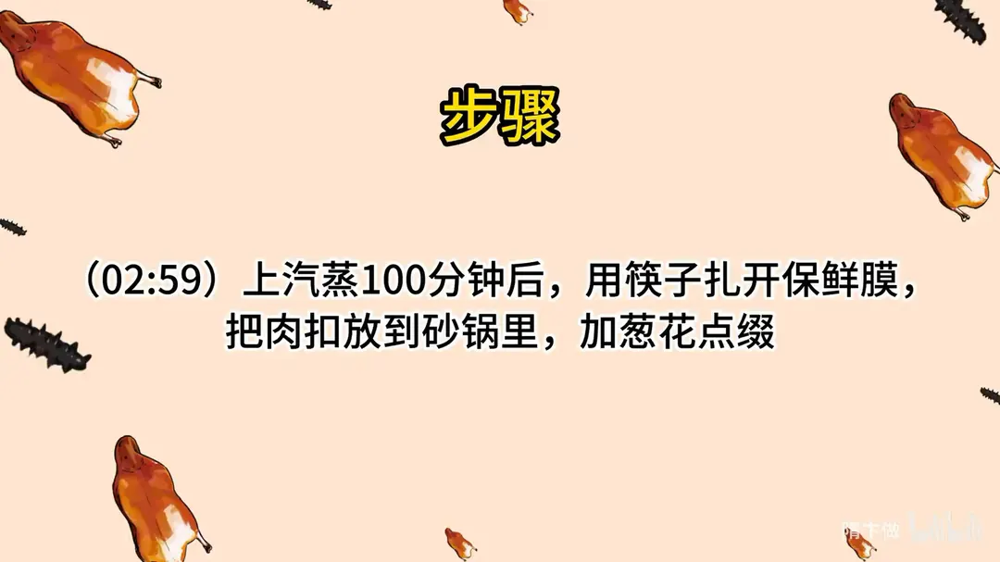

梅菜扣肉
隋卞一做。1300g 五花肉配大葱姜、大料煮 30 分钟，筷子扎不冒血水即可；梅干菜 300g 先中火炒散、炒掉 50% 水分，肉片抹老抽晾十几分钟上色后切 2.5-3mm，10 片一份封严保鲜膜，上汽蒸 100 分钟。
原视频：https://www.bilibili.com/video/BV1gW4y1F7pR
食材
五花肉、梅干菜 等 11 样
| 类别 | 用料 | 用量 |
|---|---|---|
| 主料 | 五花肉 | 1300g |
| 主料 | 梅干菜 | 300g |
| 煮肉 | 大葱姜 | 100g |
| 煮肉 | 大料 | 4 个 |
| 酱汁 | 海鲜酱 | 200g |
| 酱汁 | 南乳汁 | 50g |
| 酱汁 | 花雕酒 | 80g |
| 酱汁 | 蒜蓉 | 20g |
| 酱汁 | 糖 | 25g |
| 酱汁 | 味精 | 2g |
| 酱汁 | 老抽 | 10g |
步骤
- 煮肉：五花肉切块下锅，放葱、姜、大料瓣煮熟，约 30 分钟，筷子扎不冒血水即可。
- 洗梅干菜：梅干菜洗净备用；含盐多的要泡洗两遍，洗掉盐和泥沙。
- 调汁：倒入海鲜酱、花雕酒，南乳汁（腐乳也可以），加蒜末、味精、老抽、白糖，搅拌均匀。
- 炒梅干菜：梅干菜倒入干净锅，中火炒至分散，炒掉 50% 水分。
- 切肉上色：捞出煮好的肉，用纸吸去表面水分，表面抹老抽晾 10 多分钟便于上色；老抽晾干后切成 2.5-3mm 厚片，放入调好的酱汁里拌匀，肉片呈枣红色即可，颜色浅可加适量老抽。
- 装碗：肉片码放在盆里，10 片为 1 份；剩余酱汁和梅干菜拌匀后铺在肉片上，封保鲜膜，一定要封严实。
- 蒸制：上汽蒸 100 分钟，用筷子扎开保鲜膜，把肉扣放到砂锅里，加葱花点缀。
讲解要点
难度：★★★☆☆（不难做，难在等——煮 30 分钟、蒸 100 分钟，全在时间上）
为什么这么做
- 五花肉不焯不腌直接煮：去腥靠多放的葱姜和几瓣大料，煮的过程同时把肉定型、把血水逼出来，筷子扎不冒血水就是熟。
- 梅干菜要先洗后排干：市售梅干菜含盐极高，必须泡洗两遍去盐、去泥沙；再干锅炒掉一半水分——不炒干蒸出来一汪水、味道发淡，炒干后香味浓缩，蒸时才能把肉出的油吸饱满。
- 蒜末是关键：去腥解腻。
- 肉皮抹老抽后晾十几分钟再切：让酱色吃进皮里，蒸出来才是枣红；不晾就切，色只在表面。晾干后切 2.5-3mm，太薄蒸完立不住，太厚不进味。
- 酱汁里一滴水都不加：加水会稀释味道、蒸时还出水，成品白不呲咧。
- 保鲜膜必须封严：进了水汽，肉味就被冲散，这就是「破膜就难吃」的原因。
- 用不加水加长蒸代替炸和勾芡：100 分钟把肉蒸到软糯，梅菜的味和油自然合成浓汁，省掉虎皮和勾芡两道。
容易翻车
- 梅干菜没泡洗，成品咸得下不去口。
- 梅菜没炒干，蒸完一碗水。
- 肉没煮透就切，片不成形。
- 保鲜膜没缠严，水汽进去，肉发白发淡。
- 码片间隙不匀，扣出来东倒西歪。
热评补充
- 梅干菜的品质基本决定上限：自种自晒、三蒸三晒的梅干菜油黑发亮、细如芝麻，比市售香得多；买不到就挑颜色乌黑、没有粗梗的。
原片尾卡







原片文案
AI 字幕校准稿
这可能是全网最简单的梅菜扣肉。简单，那能好吃吗？隋老师出门了，那能难吃吗？
咱们选一块五花肉，我选了一块肥瘦比较合适的，给它切成三块。切完以后什么都不用处理，直接搁锅里煮。煮肉狠一点，葱姜多放点，放上几个大料瓣，开火煮，大约 30 分钟给它煮熟就行了。
梅菜扣肉很关键的一点，梅干菜得是这种含盐多的，你一定要拿水去泡洗两遍，把盐分洗出去。
然后我们调一个酱：海鲜酱这会儿不用记，都会给你们打在片尾；加上花雕酒、南乳汁，如果家里没有南乳汁，就放点腐乳；蒜末，这个蒜很关键，去腥解腻；味精、老抽、白糖，把所有调料搅匀。到什么程度算好？它是一个甜鲜味，你按这个比例调完之后就知道是什么味道。
洗好的梅菜倒锅里边，锅里边不放油、也不放水，干干净净的。在家里就用中火慢慢炒，水分一定要失去 50% 左右，这一炒，梅菜的香味就出来了。炒到拿勺子扒拉，一根是一根就可以。
煮好的肉捞出来之后，拿纸把表面的水吸一下，抹点酱油，这一步主要是为了让皮上色，怎么也得晾个十多分钟，看着表皮干松了、酱油色吃进去就可以了。咱把它切成片，大小自己定，大概切 2.5 到 3 毫米厚。
先把肉搁这酱汁里拌匀，拌完肉看着是这种枣红色就可以了，色浅就来点老抽。这肉色蒸得太白、白不呲咧的，看着就不香。这里边是不加水的，千万不能加水。然后码片，皮朝下，一片一片，四片五片、七片八片，每一片中间的间隙让它一样大，快速放入盆里，这就是一份。加点酱汁，剩下的酱汁拿梅菜一拌，拌完之后放在肉上面，蒸的时候它会出油，那梅菜会把油吸得很饱满。
然后封保鲜膜，一定要缠严实，是为了蒸的时候不让它进水汽。封好了之后放到蒸锅里蒸，要蒸 100 分钟。蒸到时候了开盖，你看到没有，没有挣破是好事，破了进水就很难吃了。
把这个扣过来，这盖子一打开，闻着好香。这个汁的味道好浓，整个汁的味道已经跟肉融合了，很好吃；包括那个梅干菜炒得干，梅干菜的香味，刚才一打开盖那一瞬间我就闻见了。咱这个比外面主要简单在哪？最主要是给你们省了一个炸和勾芡的过程，我们用不加水的方法和更长的蒸制时间，来达到和他们一样的效果。有手就能做，但味道绝对一点都不输那个版本。